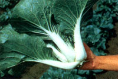
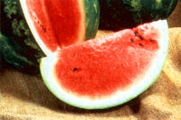
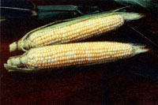
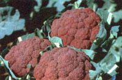

Sweet showers dampen the soil, the earth warms under springtime sunshine,, and winter-pale shoots rapidly green. Rejoice as birds echo Spring's compelling song, calling us forth to enjoy another new season in the garden.
|
 What-a-Joy- Chinese cabbage |
 Sweetheart watermelon |
 Concord sweet corn |
|
Golden Summer yellow bell pepper |
 Violet Queen cauliflower |
|